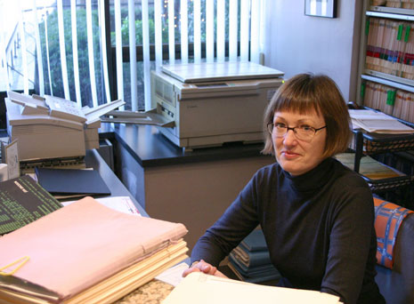

Our Offices occupy a ground-level suite in a large residential/professional building, situated on the southwest corner of Seventh Avenue and Central Park South. Entry is through a separate (non-lobby) entrance facing the New York Athletic Club across Seventh Avenue. Although there is a single step up to the entrance, limited wheelchair access is available via a portable ramp.
The cozy space, which echoes the round contours of the building, features:
Comfortable, clean facility, featuring: